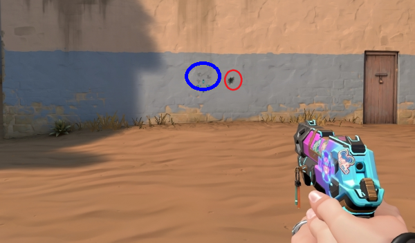

Default Blog
How Shooting Works in Valorant
Jamodin Maliwanag - October 11, 2021

Shooting in Valorant is drastically different than normal FPS (First Person Shooting) games. For example, you cannot move and shoot, but instead have to stand still and shoot. This guide will teach you about Valorant gunplay, how to properly use the guns.
Aiming and Movement
Aiming at Head Level
Aiming is very important to winning a game of Valorant. Shooting an enemy's head does more damage than shooting their body or legs. That means it takes less time and bullets to kill an enemy if you aim at their head. A common tip that players like to use is to "Aim head level".
Aiming head level without enemy
Aiming head level with enemy
No Moving
Do not move while you shoot. Moving while shooting increases the spread of the weapon meaning that it wil be less accurate. If you stand still and shoot, the first bullet will be very accurate and be in the middle of your crosshair.
Spraying
Uncontrolled Spray
The typical spray pattern for most of the guns goes in the shape of a "T". First it goes up, then right slightly then left, and repeats going right and left.
Not controlling your recoil
Controlled Spray
Since spraying makes the bullets go in a "T" pattern, you would want to keep it controlled. When controlling your spray, it keeps your bullets in a small area. It is also good to note that the bullets will not be where the crosshair is. To control your spray, move your mouse down, then left slightly then right, and predict where to move after.
Controlling your recoil
Bursting
If you're inconsistent at hitting headshots, learning how to burst your weapon is the next best option. Each weapon has different spray patterns but the first 3-4 bullets or "burst" of fully automatic guns are relatively the same. To control the recoil of your gun, move your mouse down slightly for 1 second as you fire your weapon.
Types of Guns
Valorant has 6 types of guns with their own variations. They all vary in cost of credits and handle differently.
| Types | Variations | ||||
|---|---|---|---|---|---|
| Pistols | Classic | Shorty | Frenzy | Ghost | Sheriff |
| Submachine Guns | Stinger | Spectre | |||
| Rifles | Bulldog | Guardian | Phantom | Vandal | |
| Sniper Rifles | Marshall | Operator | |||
| Shotguns | Bucky | Judge | |||
| Machine Guns | Ares | Odin | |||
We will only discuss the important guns, since they are more relevant to the average player. Every gun is a viable option, however they are used less than these guns:
- Classic
- Phantom / Vandal
- Operator
Classic
The Classic is the free pistol that every Agent starts the round off with. It has 2 ways to fire: the left click which fires 1 bullet and the right click which fires a spreadshot of 3 bullets. The pistol holds 12 bullets in a clip and 36 bullets in reserve. Since the pistol is free, it's important to use and be good with because it is the best weapon if you don't want to spend credits (Eco Round). It's also great at both long and short range, where as the other pistols are specialized in either one or the other. At short to medium range, it will take 1 headshot and 2 bodyshots to kill.

The blue circle is the Classic right click and the red circle is the Classic left click
Phantom / Vandal
The Vandal and Phantom are the 2 main guns that the average Valorant player uses. The reason is because of the damage for both at the head and body. It takes 150 damage to kill an enemy and a headshot from the Vandal does 160 damage while a headshot from the Phantom does 156 damage. However for the Phantom, if the range is 15 meters or more, then it does between 140-124 damage. When shooting at the body, it takes around 4-5 bullets to kill while the other weapons, with the exception of the Operator, will take around 6-12 bullets. Recalling "Aiming at head level" section, it's better if it takes less time and bullets to kill an enemy.
Both guns are the same price, but have slight differences:
Vandal
- 25 bullets in the clip
- kills at head at all ranges (0m to 50m)
- lower rate of fire
Phantom
- 30 bullets in the clip
- kills at head at specific ranges (0m to 15m)
- does not kill at head at longer ranges (15m to 50m)
- higher rate of fire
Operator
The Operator is considered the best gun in the game. It can kill at any range with 1 shot to the head or body. The sniper has 5 bullets in a clip with 10 bullets in reserve. Since the hitbox for the head is small, it is better to aim for the body since it's hitbox is bigger.
Aiming body level is better
The downsides to the operator are:
- expensive
- if you miss, you are most likely dead
- if you die, the enemy team can take it for free
- hard to use at shorter range
Summary
The important key points are: Aim at head level, do not move while you shoot, burst your shots while slightly pulling down your mouse, and the important guns are the Classic, the Vandal, the Phantom, and the Operator. By remembering these, you can become a great Valorant player.
{kind=link}